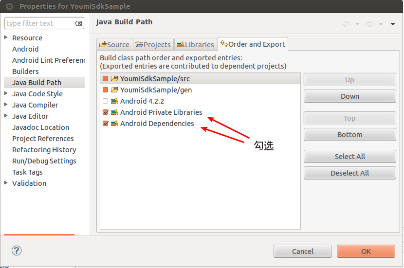
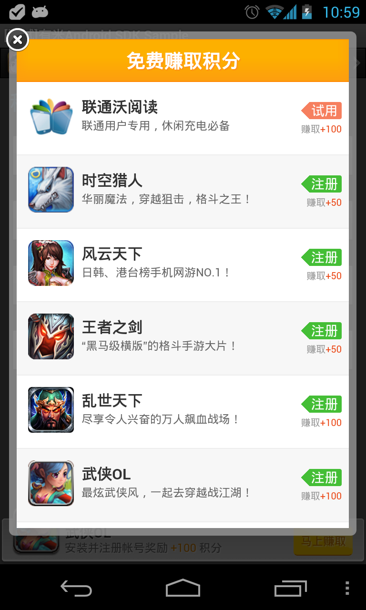

有米Android SDK v4从4.02版本开始整合了有米平台的所有广告形式以及实用功能服务。广告方面主要包含有积分和无积分两大类广告形式，无积分形式以SmartBanner、广告条、插屏和自定义广告为主；有积分广告形式是以积分墙为核心，配合多种展现形式实现的一套完整的积分广告流程；实用功能包含检查更新和在线配置参数等功能服务。
*v4系列SDK的接口已经进行了大量修改，所有配置请以本文档为准。如果您的项目之前使用的是有米积分墙v2、广告条v3的话，建议清除所有相关的广告配置，并按本文档重新实现广告配置。
v4.06 2013-11-14
v4.05 2013-08-28
v4.04
v4.03
v4.02
将 YoumiSdk_*.jar 导入您的工程中。
1). 右键您的工程根目录，选择“New”，再选择“Folder”，输入Folder name为"libs"
2). 将 YoumiSdk_.jar 拷贝到工程根目录的libs文件夹下
3). 右键 YoumSdk_.jar ，选择“Build Path”再选择“Add to Build Path”
4). 右键您的工程根目录，选择Properties->Java Build Path->Order and Export，勾选Android Private Libraries和Android Dependencies，可消除classnotfoundexception，详见下图。 5). 导入成功

在AndroidManifest.xml文件中配置用户权限
请将下面权限配置代码复制到 AndroidManifest.xml 文件中 :
<uses-permission android:name="android.permission.INTERNET"/>
<uses-permission android:name="android.permission.READ_PHONE_STATE"/>
<uses-permission android:name="android.permission.ACCESS_NETWORK_STATE" />
<uses-permission android:name="android.permission.ACCESS_WIFI_STATE"/>
<uses-permission android:name="android.permission.WRITE_EXTERNAL_STORAGE"/>
<uses-permission android:name="android.permission.SYSTEM_ALERT_WINDOW"/>
<uses-permission android:name="android.permission.GET_TASKS"/>
<!--以下为可选权限-->
<uses-permission android:name="com.android.launcher.permission.INSTALL_SHORTCUT"/>
为确保正常使用广告业务，请务必配置AdBrowser,AdReceiver和AdService。
请将以下代码复制到AndroidManifest.xml的Application节点里面:
<activity
android:name="net.youmi.android.AdBrowser"
android:configChanges="keyboard|keyboardHidden|orientation"
android:theme="@android:style/Theme.Light.NoTitleBar" >
</activity>
<service
android:name="net.youmi.android.AdService"
android:exported="false" >
</service>
<receiver
android:name="net.youmi.android.AdReceiver" >
<intent-filter>
<action android:name="android.intent.action.PACKAGE_ADDED" />
<data android:scheme="package" />
</intent-filter>
</receiver>
为了避免由于手写引起的配置错误，建议直接复制上述代码
为正常使用SmartBanner广告业务，请务必配置SmartBannerActivity，SmartBannerService, 另外针对res/values/styles.xml配置透明设置(如果您没有使用SmartBanner，则可跳过该步骤)
请将以下代码复制到AndroidManifest.xml的Application节点里面:
<activity
android:name="net.youmi.android.SmartBannerActivity"
android:configChanges="keyboard|keyboardHidden|orientation"
android:theme="@style/Transparent">
</activity>
<service
android:name="net.youmi.android.SmartBannerService"
android:exported="false">
</service>
请将以下代码复制到res/values/styles.xml的resources节点里面:
<style name="Transparent">
<item name="android:windowBackground">@android:color/transparent</item>
<item name="android:windowNoTitle">true</item>
<item name="android:windowIsTranslucent">true</item>
<item name="android:windowAnimationStyle">@android:style/Animation.Translucent</item>
</style>
为正常使用积分广告业务，请务必配置OffersReceiver，否则将有可能获取不到积分。(如果您没有使用积分墙广告，则可以跳过该步骤)
请将以下代码复制到AndroidManifest.xml的Application节点里面:
<receiver
android:name="net.youmi.android.offers.OffersReceiver"
android:exported="false" >
</receiver>
目前，有米已经与多家应用商店合作，当您发布的目标应用商店有要求您加上有米的渠道号时，您可以按以下操作加入渠道号进行打包，这样可以保证您的应用在该应用商店上顺利审核通过。
渠道号列表详见:有米广告推广渠道号列表
请在AndroidManifest.xml中添加以下代码:
<meta-data android:name="YOUMI_CHANNEL"
android:value="这里替换为非负整数的渠道号" >
</meta-data>
请务必在主Activity的onCreate中调用AdManager.getInstance(context).init 接口初始化App的发布ID 、应用密钥和测试模式等参数。
其中，发布ID和密钥在上文的申请AppID获得。
代码示例:
package com.test
import android.app.Activity
import net.youmi.android.AdManager;
/**
* 这是您的应用的主Activity
*/
public class YourMainActivity extends Activity {
@Override
protected void onCreate(Bundle savedInstanceState) {
// TODO Auto-generated method stub
super.onCreate(savedInstanceState);
// 初始化应用的发布ID和密钥，以及设置测试模式
AdManager.getInstance(this).init("您的应用发布ID","您的应用密钥", false);
}
}
！请将测试模式设置为false后上传至网站等待审核。
！未上传应用安装包、未通过审核的应用、模拟器运行，都只能获得测试广告，审核通过后，模拟器上依旧是测试广告，真机才会获取到正常的广告。
如果您的项目使用了Proguard混淆打包，请务必在proguard-project.txt中添加以下代码,否则将有可能获取不到广告:
-dontwarn net.youmi.android.**
-keep class net.youmi.android.** {
*;
}
可以在完成配置之后，在任意可以执行到代码的地方，如主Activity的onCreate，根据您已经嵌入的广告形式调用相应的配置验证接口进行配置验证。验证接口往往返回true或false，如果返回的是false，您需要详细查看logcat的提示，及时更正配置。 当您验证完配置之后，可以移除配置验证接口的调用，因为它只适用于调试阶段。
bool checkResult = net.youmi.android.spot.SpotManager.checkSpotAdConfig(context);
bool checkResult = net.youmi.android.smart.SmartBannerManager.checkSmartBannerAdConfig(context);
//使用sdk自带的积分托管，不自定义积分账户的配置检查:
bool checkResult = net.youmi.android.offers.OffersManager.checkOffersAdConfig();
//不使用sdk自带的积分托管，使用自定义积分账户的配置检查：
bool checkResult = net.youmi.android.offers.OffersManager.checkOffersAdConfig(true);
!注意,使用积分广告请务必配置 OffersReceiver
如果您的应用有独立的用户账号体系，并且允许用户随时切换账户，那么您可能需要准确跟踪用户的哪个账号完成了积分墙广告并赚取了积分。通过为用户设置一个自定义标识(比如账户名)，便可以将这个标识附加在积分墙会话中，这样在积分结算以及订单回调时，您将可以清楚知道具体哪个账号完成了积分任务，从而进行下一步处理。
示例代码:
// 调用以下接口设置您的用户的唯一标识
OffersManager.getInstance(this).setCustomUserId("abcdefg_123");
注:用户标识必须为"字母数字下划线"组合
请务必在应用的启动代码，即在主Activity的onCreate方法中分别调用积分墙专用的初始化接口。
代码示例:
package com.test
import android.app.Activity
import net.youmi.android.AdManager;
import net.youmi.android.offers.OffersManager;
/**
* 这是您的应用的主Activity
*/
public class YourMainActivity extends Activity {
@Override
protected void onCreate(Bundle savedInstanceState) {
// TODO Auto-generated method stub
super.onCreate(savedInstanceState);
// 初始化应用发布ID和密钥，以及设置测试模式
AdManager.getInstance(this).init("您的应用发布ID","您的应用密钥", false);
// 请务必调用以下代码，告诉SDK应用启动，可以让SDK进行一些初始化操作。该接口务必在SDK的初始化接口之后调用。
OffersManager.getInstance(this).onAppLaunch();
}
}
请务必在应用退出前调用积分墙专用的会话结束接口，让SDK进行一些资源的释放和清理。
代码示例:
import net.youmi.android.offers.OffersManager;
...
// 请务必在应用退出的时候调用以下代码，告诉SDK应用已经关闭，可以让SDK进行一些资源的释放和清理。
OffersManager.getInstance(this).onAppExit();
...
调用OffersManager.getInstance(this).showOffersWall()展示全屏的积分墙。
代码示例:
import android.app.Activity
import net.youmi.android.offers.OffersManager;
....
//调用showOffersWall显示全屏的积分墙界面
OffersManager.getInstance(this).showOffersWall();
....
积分墙默认情况下根据手机系统的屏幕方向布局，如果希望强制设置积分墙的方向为竖向或横向，只需要在AndroidManifest.xml中配置AdBrowser即可。
设置为竖向显示:
<activity
android:name="net.youmi.android.AdBrowser"
android:configChanges="keyboard|keyboardHidden|orientation"
android:screenOrientation="portrait"
android:theme="@android:style/Theme.Light.NoTitleBar" >
</activity>
设置为横向显示:
<activity
android:name="net.youmi.android.AdBrowser"
android:configChanges="keyboard|keyboardHidden|orientation"
android:screenOrientation="landscape"
android:theme="@android:style/Theme.Light.NoTitleBar" >
</activity>

调用OffersManager的showOffersWallDialog(Activity activity)方法即可。
如果您希望自定义对话框的大小，可以调用其重载函数。
代码示例
import android.app.Activity
import net.youmi.android.offers.OffersManager;
....
//下面展示三种可选的调用方法:
//*调用方式1.调用showOffersWallDialog显示默认的对话框样式积分墙:
OffersManager.getInstance(this).showOffersWallDialog(this);
//*调用方式2.传入宽度和高度的像素值(注意：传入的宽高请确保是在竖屏状态下最佳的值，sdk会自动适应屏幕方向):
OffersManager.getInstance(this).showOffersWallDialog(this,300,400);
//*调用方式3.传入宽度和高度占系统屏幕的百分比(注意,值类型为double，请确保大于0并小于1)
OffersManager.getInstance(this).showOffersWallDialog(this,0.9d,0.95d);
....
显示有积分的横幅广告条，将高度为60dp的积分广告条定义为积分Banner，高度为32dp的积分广告条定义为积分迷你Banner。
通过OffersBanner和OffersAdSize实例化积分广告条。
以下是OffersAdSize的几种规格定义:
效果图1(竖屏):
效果图2(横屏):
1).配置布局文件
复制以下代码到要展示广告的Activity的layout文件中，并且放在合适的位置：
<RelativeLayout android:id="@+id/offersAdLayout"
android:layout_width="fill_parent"
android:layout_height="wrap_content"
android:gravity="center_horizontal">
</RelativeLayout>
2).将积分Banner加入布局
在展示广告的Activity类中，添加如下代码：
...
import net.youmi.android.offers.OffersBanner;
import net.youmi.android.offers.OffersAdSize;
...
//获取要嵌入积分广告条的布局
RelativeLayout adLayout=(RelativeLayout)findViewById(R.id.offersAdLayout);
//demo 1 积分Banner : 宽满屏，高60dp
OffersBanner banner = new OffersBanner(this, OffersAdSize.SIZE_MATCH_SCREENx60);//传入高度为60dp的OffersAdSize来定义积分Banner
//demo 2 积分Banner : 宽320dp，高60dp
OffersBanner banner = new OffersBanner(this, OffersAdSize.SIZE_320x60);//传入高度为60dp的OffersAdSize来定义积分Banner
//demo 3 积分迷你Banner : 宽满屏，高32dp
OffersBanner banner = new OffersBanner(this, OffersAdSize.SIZE_MATCH_SCREENx32);//传入高度为32dp的OffersAdSize来定义积分迷你Banner
//demo 4 积分迷你Banner : 宽320dp，高32dp
OffersBanner banner = new OffersBanner(this, OffersAdSize.SIZE_320x32);//传入高度为32dp的OffersAdSize来定义积分迷你Banner
//将积分Banner加入到布局中
adLayout.addView(banner);
在展示广告的Activity的onCreate中，添加如下代码:
//实例化LayoutParams(重要)
FrameLayout.LayoutParams layoutParams = new FrameLayout.LayoutParams(
FrameLayout.LayoutParams.FILL_PARENT,
FrameLayout.LayoutParams.WRAP_CONTENT);
//设置积分Banner的悬浮位置
layoutParams.gravity = Gravity.BOTTOM | Gravity.RIGHT; // 这里示例为右下角
//实例化积分Banner
OffersBanner banner = new OffersBanner(this, OffersAdSize.SIZE_MATCH_SCREENx60);//传入高度为60dp的OffersAdSize来定义积分Banner
//调用Activity的addContentView函数
this.addContentView(banner, layoutParams);
可以在有米主站开发者面板设置积分广告条的切换频率和背景颜色等。
积分墙SDK内置积分账户托管，以下是调用方法。
代码示例:
import android.app.Activity
import net.youmi.android.offers.OffersManager;
...
//调用queryPoints获取积分余额
int myPointBalance = PointsManager.getInstance(this).queryPoints();
Log.d("test","积分余额为:"+myPointBalance);
...
代码示例:
import android.app.Activity
import net.youmi.android.offers.PointsManager;
...
//调用spendPoints消费指定金额的积分，这里示例消费100积分
if(PointsManager.getInstance(this).spendPoints(100)){
Log.d("test","已消费100积分");
}else{
Log.d("text","消费积分失败(积分余额不足)");
}
...
当用户连续n天登录或通过了某关卡时，您可以使用以下接口奖励用户一定额度的积分。
代码示例:
import android.app.Activity
import net.youmi.android.offers.PointsManager;
...
//调用awardPoints可以奖励指定金额的积分，这里示例奖励50积分
PointsManager.getInstance(this).awardPoints(50);
Log.d("test","已成功奖励50积分");
...
SDK提供了监听积分余额变动接口，方便UI自动刷新显示变动的积分余额。
监听积分变动的UI相关的类必须implements PointsChangeNotify接口，并且需要在初始化及关闭时分别调用PointsManager的registerNotify和unRegisterNotify接口示例如下:
package com.test
import net.youmi.android.offers.OffersManager;
import net.youmi.android.offers.PointsChangeNotify;
import net.youmi.android.offers.PointsManager;
import android.app.Activity;
public class YourTestActivity extends Activity implements PointsChangeNotify {
@Override
protected void onCreate(Bundle savedInstanceState) {
// TODO Auto-generated method stub
super.onCreate(savedInstanceState);
//注意:请务必调用registerNotify来注册监听器，否则将得不到积分账户余额变动的通知。
PointsManager.getInstance(this).registerNotify(this);
}
@Override
protected void onDestroy() {
// TODO Auto-generated method stub
super.onDestroy();
//注意:请务必在onDestroy中调用unRegisterNotify来注销监听
PointsManager.getInstance(this).unRegisterNotify(this);
}
@Override
public void onPointBalanceChange(int pointsBalance) {
// TODO Auto-generated method stub
//当该方法被调用时，表示积分账户余额已经变动了，这里的pointsBalance是积分的当前余额数
Log.d("test","积分账户余额已变动，当前余额为:"+pointsBalance);
//注:您可以在这里进行更新界面显示等操作，
}
}
上文提到的监听积分余额变动只是用于监听SDK托管积分账户的余额变动，如果您希望监听用户赚取积分的订单详情，您可以使用监听积分赚取订单接口。
首先，您需要定义一个MyPointsReceiver类(名字可以随意)，它必须继承自PointsReceiver:
示例代码:
package com.test;
import android.content.Context;
import net.youmi.android.offers.EarnPointsOrderList;
import net.youmi.android.offers.PointsReceiver;
public class MyPointsReceiver extends PointsReceiver{
@Override
protected void onEarnPoints(Context context, EarnPointsOrderList list) {
//当SDK获取到用户赚取积分的订单时，会第一时间调用该方法通知您。
//参数EarnPointsOrderList是一个积分订单列表，您可以在这里处理积分详细订单。
}
@Override
protected void onViewPoints(Context context) {
//这里是个有趣的小功能，当用户赚取积分之后，积分墙SDK会在通知栏上显示一条获取积分的提示，如果用户点击了这个通知，该函数会被调用。
//这时候您可以在这里实现一个跳转，让用户跳转到您设计好的一个积分账户余额页面(如"我的账户"之类的Activity)。
//该操作是可选的，如果需要关闭通知栏积分提示，请调用PointsManager.getInstance(context).setEnableEarnPointsNotification(false)
}
}
下一步，您需要在AndroidManifest.xml上配置刚刚定义的 MyPointsReceiver:
示例代码:
<receiver
android:name="MyPointsReceiver"
android:exported="false" >
<intent-filter>
<action android:name="ep_请替换为您的AppID" />
<action android:name="vp_请替换为您的AppID" />
</intent-filter>
</receiver>
注意:这里有一个很关键的细节，您必须为MyPointsReceiver配置两个Action，Action的名字分别是以"ep_"和"vp_"开头的，以您的应用的AppID结尾的字符串。（AppID是从有米主站上申请的应用ID，16个字符，所以Action的总长度应该是19个字符）
附录:积分订单类定义
EarnPointsOrderList:
package net.youmi.android.offers;
...
/**
* 积分订单列表
*
*/
public class EarnPointsOrderList {
/**
* 获取服务器上设置积分单位名称
*/
public String getCurrencyName();
/**
* 根据index获取订单详情(EarnPointsOrderInfo)
*/
public EarnPointsOrderInfo get(int index);
/**
* 判断列表是否为空
*/
public boolean isEmpty();
/**
* 获取列表项数量
*/
public int size();
}
EarnPointsOrderInfo:
package net.youmi.android.offers;
/**
* 赚取积分的订单
*/
public final class EarnPointsOrderInfo {
/**
* 获取订单号(具有唯一性)
*/
public String getOrderID();
/**
* 获取渠道号，这里指在AndroidManifest.xml上配置的有米渠道号，详见文档
*/
public int getChannelId();
/**
* 获取开发者自定义用户唯一标识，该值通过OffersManager设置
*/
public String getCustomUserID();
/**
* 获取积分订单的状态: 1.表示开发者获得了收入并且用户获得了积分。 2.表示开发者没有获得收入但用户获得了积分(未通过审核以及测试模式下结算无效等情况)。
*/
public int getStatus()
/**
* 本次获取积分的描述语，如"成功安装《--》获取了100金币"
*/
public String getMessage();
/**
* 本次获得的积分
*/
public int getPoints();
/**
* 本次获得积分的结算时间
*/
public long getSettlingTime();
}
如果您不想使用上文提到的SDK积分托管，而是希望实现自己的客户端积分托管功能(即自定义积分账户)，请参照监听积分赚取订单的步骤实现积分订单监听并实现自定义积分管理功能。
如果您希望用户赚取积分的订单结算完成后，直接由有米的服务器通知您的服务器，可以使用服务器积分订单回调接口，
协议传送门: 有米积分墙积分订单服务器回调协议
1.实现接收订单的回调接口时，请务必按照协议说明进行。
2.务必在有米主站开发者面板的目标应用详情页上设置您的回调地址。
请注意，一旦您设置了积分订单回调地址，有米服务器会在用户的积分订单成功结算后第一时间通知您的服务器，但客户端将不再接收到任何积分订单记录，即上文提到的SDK积分托管、监听积分赚取订单以及自定义积分账户等功能将不可用。
为了让用户更加清楚获知积分的赚取情况，SDK使用了悬浮提示框以及通知栏提示来提醒用户积分到账情况。此功能是默认开启的，但您可以通过PointsManager的相关接口来关闭提醒功能。
示例代码
...
import net.youmi.android.offers.PointsManager
...
//关闭积分到账通知栏提示功能
PointsManager.getInstance(this).setEnableEarnPointsNotification(false);
...
//关闭积分到账悬浮框提示功能
PointsManager.getInstance(this).setEnableEarnPointsToastTips(false);
...
预加载广告数据，在应用启动初始化的时候调用，SDK将会以异步方式预加载3-5条广告数据到本地缓存，当调用展示插播接口时候便能立即展示广告。
如果不先加载数据，调用展示插播接口的时候，会等待广告数据加载成功再进行展示，会造成一定延时。
调用接口
SpotManager.getInstance(this).loadSpotAds();
注:this参数是继承自Context的类实例
SDK提供给有需要的开发者调用展示广告的时候加载广告超时时间，如果超过该值，则不展示，默认0，代表不设定超时时间（单位：毫秒）
SpotManager.getInstance(this).setSpotTimeout(5000);//5秒
展示插播广告，一般可以在应用启动或者游戏通关等场景中调用。
开发者可以到开发者后台设置展示频率，需要到开发者后台设置页面（详细信息->业务信息->无积分广告业务->高级设置）
自4.03版本增加云控制是否开启防误点功能，需要到开发者后台设置页面（详细信息->业务信息->无积分广告业务->高级设置）
SpotManager.getInstance(this).showSpotAds(this);
效果图:
SDK提供给有需要的开发者使用插播监听接口，用于监听插播的状态
SpotManager.getInstance(this).showSpotAds(this, new SpotDialogListener() {
@Override
public void onShowSuccess() {
Log.i("Youmi", "onShowSuccess");
}
@Override
public void onShowFailed() {
Log.i("Youmi", "onShowFailed");
}
});
！AdSize提供了五种广告条尺寸提供给开发者使用：
AdSize.FIT_SCREEN 自适应屏幕宽度
AdSize.SIZE_320x50 手机
AdSize.SIZE_300x250 手机，平板
AdSize.SIZE_468x60 平板
AdSize.SIZE_728x90 平板
复制以下代码到要展示广告的Activity的layout文件中，并且放在合适的位置：
<LinearLayout android:id="@+id/adLayout"
android:layout_width="fill_parent"
android:layout_height="wrap_content"
android:gravity="center_horizontal">
</LinearLayout>
在展示广告的Activity类中，添加如下代码：
//实例化广告条
AdView adView = new AdView(this, AdSize.FIT_SCREEN);
//获取要嵌入广告条的布局
LinearLayout adLayout=(LinearLayout)findViewById(R.id.adLayout);
//将广告条加入到布局中
adLayout.addView(adView);
在展示广告的Activity的onCreate中，添加如下代码:
//实例化LayoutParams(重要)
FrameLayout.LayoutParams layoutParams = new FrameLayout.LayoutParams(
FrameLayout.LayoutParams.FILL_PARENT,
FrameLayout.LayoutParams.WRAP_CONTENT);
//设置广告条的悬浮位置
layoutParams.gravity = Gravity.BOTTOM | Gravity.RIGHT; // 这里示例为右下角
//实例化广告条
AdView adView = new AdView(this, AdSize.FIT_SCREEN);
//调用Activity的addContentView函数
this.addContentView(adView, layoutParams);
效果图:
SDK提供给有需要的开发者使用广告条监听接口，用于监听广告条的状态
adView.setAdListener(new AdViewListener() {
@Override
public void onSwitchedAd(AdView adView) {
// 切换广告并展示
}
@Override
public void onReceivedAd(AdView adView) {
// 请求广告成功
}
@Override
public void onFailedToReceivedAd(AdView adView) {
// 请求广告失败
}
});
调用接口
DiyManager.showRecommendWall(this); //展示所有无积分推荐墙
//DiyManager.showRecommendAppWall(this); //展示应用推荐墙
//DiyManager.showRecommendGameWall(this); //展示游戏推荐墙
效果图:
显示无积分的横幅广告条，将高度为32dp的广告条定义为迷你Banner。
1).配置布局文件
复制以下代码到要展示广告的Activity的layout文件中，并且放在合适的位置：
<RelativeLayout android:id="@+id/AdLayout"
android:layout_width="fill_parent"
android:layout_height="wrap_content"
android:gravity="center_horizontal">
</RelativeLayout>
2).将迷你Banner加入布局
在展示广告的Activity类中，添加如下代码：
//获取要嵌入迷你广告条的布局
RelativeLayout adLayout=(RelativeLayout)findViewById(R.id.AdLayout);
//demo 1 迷你Banner : 宽满屏，高32dp
DiyBanner banner = new DiyBanner(this, DiyAdSize.SIZE_MATCH_SCREENx32);//传入高度为32dp的AdSize来定义迷你Banner
//demo 2 迷你Banner : 宽320dp，高32dp
DiyBanner banner = new DiyBanner(this, DiyAdSize.SIZE_320x32);//传入高度为32dp的AdSize来定义迷你Banner
//将积分Banner加入到布局中
adLayout.addView(banner);
在展示广告的Activity的onCreate中，添加如下代码:
//实例化LayoutParams(重要)
FrameLayout.LayoutParams layoutParams = new FrameLayout.LayoutParams(
FrameLayout.LayoutParams.FILL_PARENT,
FrameLayout.LayoutParams.WRAP_CONTENT);
//设置迷你Banner的悬浮位置
layoutParams.gravity = Gravity.BOTTOM | Gravity.RIGHT; // 这里示例为右下角
//实例化迷你Banner
DiyBanner banner = new DiyBanner(this, DiyAdSize.SIZE_MATCH_SCREENx32);//传入高度为32dp的DiyAdSize来定义迷你Banner
//调用Activity的addContentView函数
this.addContentView(banner, layoutParams);
效果图:
在应用启动初始化的时候调用，SDK将会针对用户手机上已经安装的应用列表进行广告匹配。
SmartBannerManager.init(this);
调用即在屏幕展示SmartBanner，如果没有出现，请检查网络情况是否良好，混淆代码是否配置正确。
SmartBannerManager.show(this);
效果图1:
效果图2:
有米广告SDK提供应用版本检查更新接口，您可以在应用中调用提示用户升级。
通过在有米主站上传应用的新版本通过审核后，使用有米广告SDK的应用版本检查更新接口就可以获得更新信息，它包括更新提示和下载地址，这样您可以进行下一步的操作，如向用户提示更新以及下载安装新版本。接口:
...
import net.youmi.android.AdManager
import net.youmi.android.dev.AppUpdateInfo
import net.youmi.android.dev.CheckAppUpdateCallBack;
...
//通过调用AdManager的syncCheckAppUpdate或asyncCheckAppUpdate接口即可检查更新。
//返回值AppUpdateInfo包含了更新提示以及下载地址，如果结果为null则表示当前已经是最新版本，无需下一步操作
//
//1.同步调用方法:
AppUpdateInfo updateInfo=AdManager.getInstance(this).syncCheckAppUpdate(); //注意，此方法务必在非UI线程调用，否则有可能不成功。
//
//2.异步调用方法
AdManager.getInstance(this).asyncCheckAppUpdate(callback); //注意，此方法可以在任意线程中调用。
//
//当updateInfo不为null时，请自行处理提示及下载安装流程。
...
示例(同步接口，必须在非UI线程中调用，示例使用了AsyncTask):
import net.youmi.android.AdManager;
import net.youmi.android.dev.AppUpdateInfo;
import android.app.AlertDialog;
import android.content.Context;
import android.content.DialogInterface;
import android.content.Intent;
import android.net.Uri;
import android.os.AsyncTask;
/*
*这里示例一个调用更新应用接口的工具类，由开发者自定义，继承自AsyncTask
*
*/
public class UpdateHelper extends AsyncTask<Void, Void, AppUpdateInfo> {
private Context mContext;
public UpdateHelper(Context context) {
mContext = context;
}
@Override
protected AppUpdateInfo doInBackground(Void... params) {
try {
//在doInBackground中调用AdManager的checkAppUpdate即可从有米服务器获得应用更新信息。
return AdManager.getInstance(mContext).syncCheckAppUpdate(); //此方法务必在非UI线程调用，否则有可能不成功。
} catch (Throwable e) {
// TODO: handle exception
e.printStackTrace();
}
return null;
}
@Override
protected void onPostExecute(AppUpdateInfo result) {
super.onPostExecute(result);
try {
if (result == null || result.getUrl() == null) {
//如果AppUpdateInfo为null或它的url属性为null，则可以判断为没有新版本。
Toast.makeText(this, "当前版本已经是最新版", Toast.LENGTH_SHORT).show();
return;
}
//这里简单示例使用一个对话框来显示更新信息
new AlertDialog.Builder(mContext)
.setTitle("发现新版本")
.setMessage(result.getUpdateTips())//这里是版本更新信息
.setNegativeButton("马上升级",
new DialogInterface.OnClickListener() {
@Override
public void onClick(DialogInterface dialog,
int which) {
Intent intent = new Intent(
Intent.ACTION_VIEW, Uri
.parse(result
.getUrl()));
intent.addFlags(Intent.FLAG_ACTIVITY_NEW_TASK);
mContext.startActivity(intent);
//ps:这里示例点击"马上升级"按钮之后简单地调用系统浏览器进行新版本的下载，
//但强烈建议开发者实现自己的下载管理流程，这样可以获得更好的用户体验。
}
})
.setPositiveButton("下次再说",
new DialogInterface.OnClickListener() {
@Override
public void onClick(DialogInterface dialog,
int which) {
dialog.cancel();
}
}).create().show();
} catch (Throwable e) {
e.printStackTrace();
}
}
}
示例(异步接口，可在任意线程使用):
import net.youmi.android.AdManager;
import net.youmi.android.dev.AppUpdateInfo;
import net.youmi.android.dev.CheckAppUpdateCallBack;
import android.content.Context;
import android.app.Activity
import android.content.Intent;
import android.net.Uri;
/*
*这里示例一个Activity调用
*
*/
public class UpdateActivity extends Activity implements CheckAppUpdateCallBack{
@Override
protected void onCreate(Bundle savedInstanceState) {
//调用检查更新接口，这里可以在UI线程调用，也可以在非UI线程调用。
AdManager.getInstance(this).asyncCheckAppUpdate(this);
}
@Override
public void onCheckAppUpdateFinish(AppUpdateInfo updateInfo) {
//检查更新回调，注意，这里是在UI线程回调的，因此您可以直接与UI交互，但不可以进行长时间的操作(如在这里访问网络 是不允许的)
if(updateInfo==null){
//当前已经是最新版本
}else{
//有更新信息
}
}
}
在线参数是有米平台推出的新服务，可以让开发者动态修改应用中的配置项，如欢迎语、道具价格、广告开关等等。它以Key-Value的形式使用。
开发者可以在有米主站开发者面板的应用详情里面设置指定应用的在线参数，然后在代码中调用它。接口示例如下:
示例代码:
import net.youmi.android.AdManager;
import net.youmi.android.dev.OnlineConfigCallBack; //异步回调
...
String mykey="mycustomkey";//key
String defaultValue=null;//默认的value，当获取不到在线参数时，会返回该值
//1.同步调用方法，务必在非UI线程中调用，否则可能会失败。
String value=AdManager.getInstance(context).syncGetOnlineConfig(key,
defaultValue);
//--------------------------------------------------
//2.异步调用方法(可在任意线程中调用):
AdManager.getInstance(this).asyncGetOnlineConfig(mykey, new OnlineConfigCallBack() {
@Override
public void onGetOnlineConfigSuccessful(String key, String value) {
// TODO Auto-generated method stub
//获取在线参数成功
}
@Override
public void onGetOnlineConfigFailed(String key) {
// TODO Auto-generated method stub
//获取在线参数失败，可能原因有：键值未设置或为空、网络异常、服务器异常
}
});
...
注:在线配置服务缓存具有一定的延时，因此在开发者控制面板上更改的配置项客户端可能需要一定的时间才能响应更新。
请检查是否已经按文档的步骤嵌入了广告SDK，包括AndroidManifest.xml的配置、初始化接口的调用以及各个广告接口的使用。
请务必详细检查混淆配置，否则将有可能获取不到广告。
请在手机上运行测试是否可以正常获取广告。
发布前请在有米主站上传应用进行审核。审核通过之后请测试是否可以正常获得收入，在有米主站开发者面板的收入报表中可以查看收入情况。
通过审核并且确认可以获得广告收入之后，就可以正式发布应用了。
有米广告SDK使用UTF-8字符编码,在嵌入广告以及导入示例程序的时候请使用UTF-8编程环境，否则会出现乱码情况。
有米广告Android SDK兼容Android 系统 2.1及以上版本SDK，对于2.1以下版本可能会有兼容性问题。
如果需要关闭有米广告SDK的 debug log，请调用AdManager.setEnableDebugLog(false)来关闭sdk的log输出。 "代码示例:"
import net.youmi.android.AdManager
...
//调用以下接口关闭有米广告SDK相关的log
AdManager.getInstance(this).setEnableDebugLog(false);
...
注意:上传到有米主站进行审核时务必开启debug log,这样才能保证通过审核。
广告运行在非发布状态下的情况属于测试模式。
以下情况下属于测试模式：
1. 在初始化接口设置测试模式为true
2. 应用未上传、待审核的情况下属于测试模式
3. 已上传并通过审核，但是后续版本应用ID和密钥与应用的包名不对应测试模式下积分墙的标题会有"测试"字样的提示语，该模式下可以获得更多的测试广告，已经安装过的广告卸载后可以重复安装，但只能结算积分，不结算收入。正式发布前请务必将初始化接口的测试模式参数设置为flase，并且上传应用到有米主站进行审核。
如果您在使用有米Android SDK 的过程中遇到了问题，或者对于SDK有任何宝贵的改进意见，欢迎联系我们的企业客服Q : 800006808 我们将竭诚为您服务。